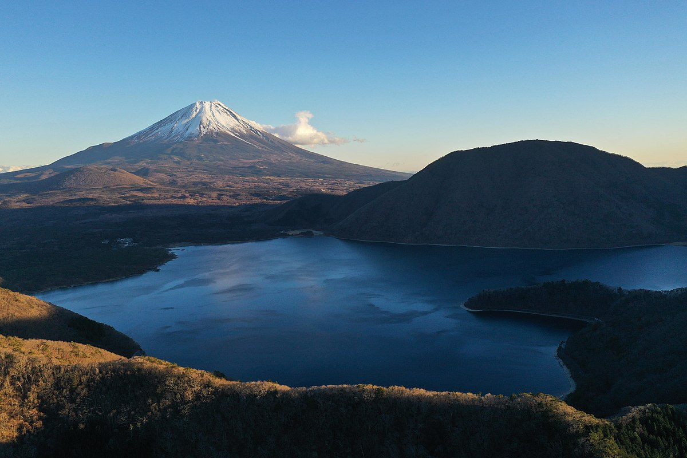
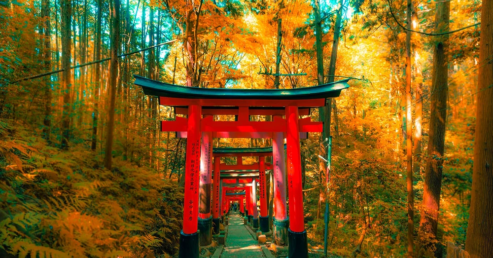
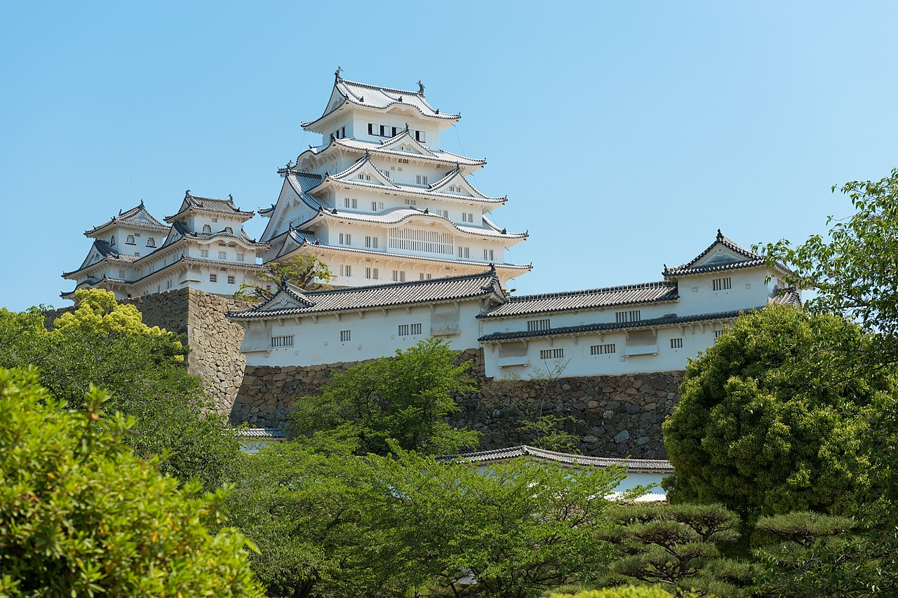
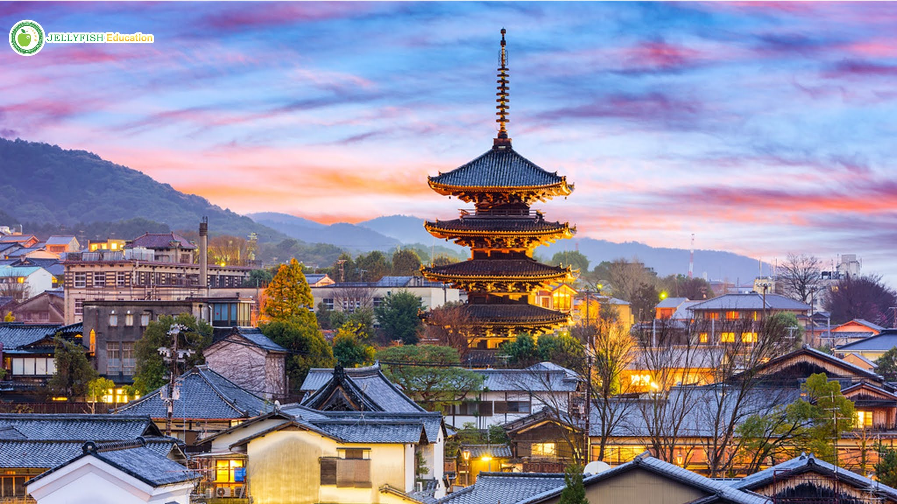
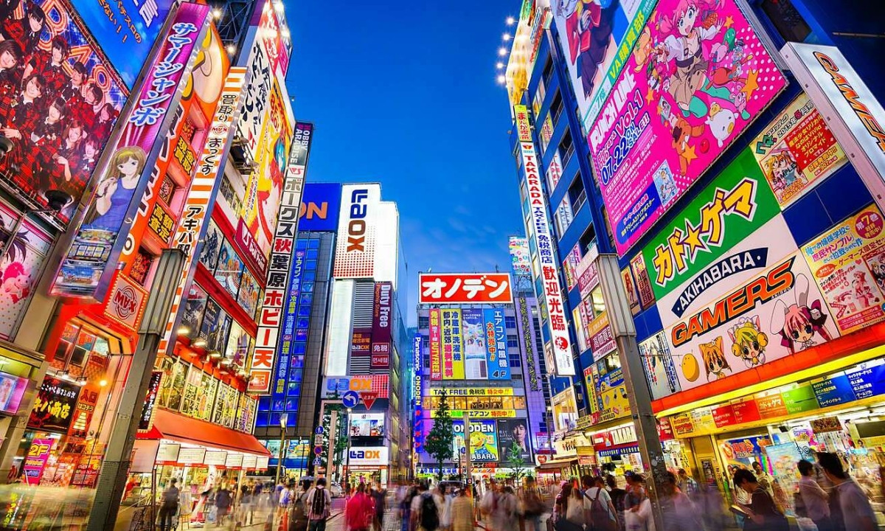

Nhật Bản
Là một đất nước hòa quyện giữa truyền thống và hiện đại, Nhật Bản luôn mang trong mình một sức hút độc đáo và đầy quyến rũ. Nếu ai đó hỏi điều gì tạo nên nét đặc biệt thu hút du lịch Nhật Bản, thì có lẽ đó là sự thú vị khi dạo bước qua những con phố cổ kính, ngắm nhìn hoa anh đào nở rộ vào mùa xuân hay chiêm ngưỡng những công trình kiến trúc hiện đại đầy ấn tượng.
Du lịch Nhật Bản tự túc còn hấp dẫn du khách bởi nền ẩm thực phong phú với các món ăn đặc sản như sushi, ramen, tempura, và các địa điểm nổi tiếng như núi Phú Sĩ, đền Kinkaku-ji (Chùa Vàng), hay những con phố tấp nập ở Tokyo. Có rất nhiều điều bất ngờ đang chờ bạn đến Nhật Bản để khám phá và trải nghiệm!
Tìm hiểu Japan
Tham quan các điểm nổi bật của điểm đến này
Tham quan các điểm nổi bật của điểm đến này
Điểm tham quan du lịch Nhật Bản nổi tiếng

Núi Phú Sĩ

Đền Fushimi Inari Taisha

Thành Himeji
Các điểm đến nổi tiếng ở Nhật Bản

Kyoto

Công viên Hiroshima Peace Memorial Park

Tokyo